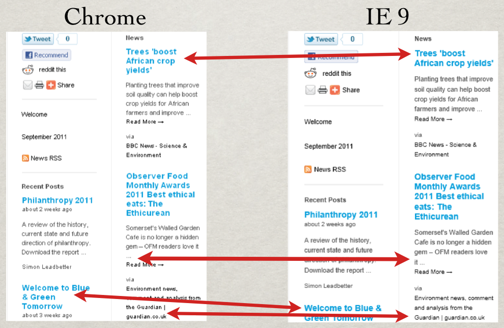
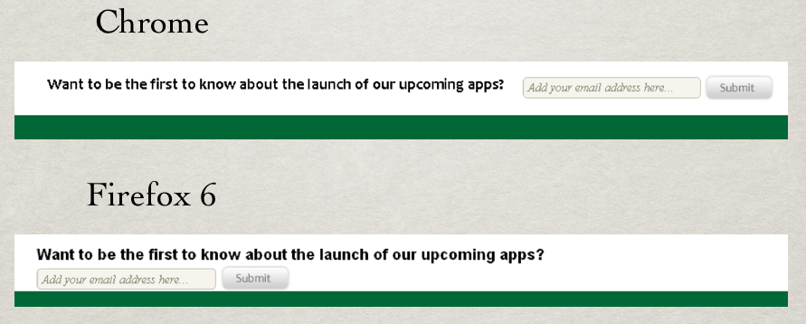

WCT Illustrated
A Case of Indifference
Web Consistency Testing isn't about finding 100% parity between two pages. While it can be tuned to do that if you wish, the point is to check if a page looks right at a given point in time in a particular browser. We ignore differences in a page if they don't adversely impact the experience for our customers.
Figure 1 illustrates an example of a series of rendering differences in a page between two different browsers. Here the page looks fine in both browsers. I'm not sure which is really the correct one. And a visitor to the site wouldn't even know that the page looked different in another browser. There's nothing to fix here and there's nothing to be gained by spending time making these two renderings look identical.

A Big Difference
Just as Figure 1 presented an example of rendering differences we don't care about, Figure 2 shows that there are other cases where elements wrap that we very much care about. In this example a form wrapped onto the next line in one browser. This could heavily impact conversion numbers or results from a multivariate test. It's jarring and makes the design look odd. Fortunately in this case the wrapped form didn't break anything else on the page. But, a visitor to this page in Firefox 6 would likely be able to tell the page looks wrong without ever opening it in another browser.

Recap
Web Consistency Testing helps narrow down the work we have to do by highlighting only the issues that actually impact visitors to our sites. If we throw away the notion of pixel-perfect design, and allow ourselves to be comfortable with pages looking good, if not the same, on various browsers and devices, we can adapt to changes in the Web much more frequently. And we can be freed of dealing with trivial work to focus on the issues that have a meaningful impact on our sites and apps.